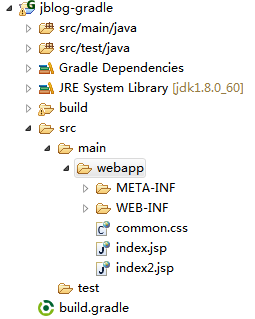
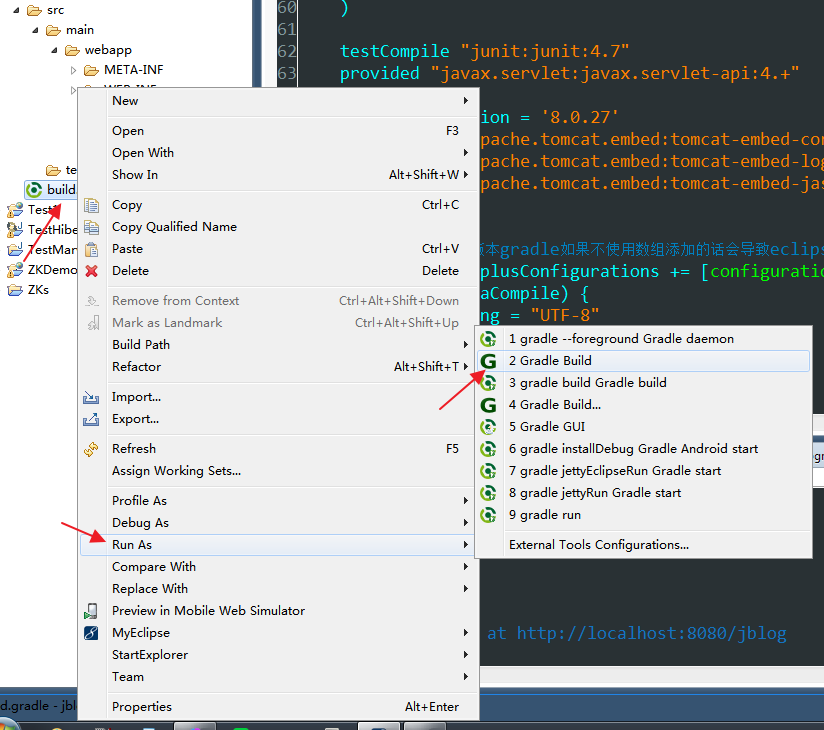
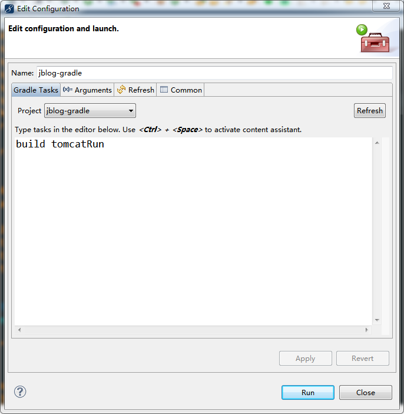
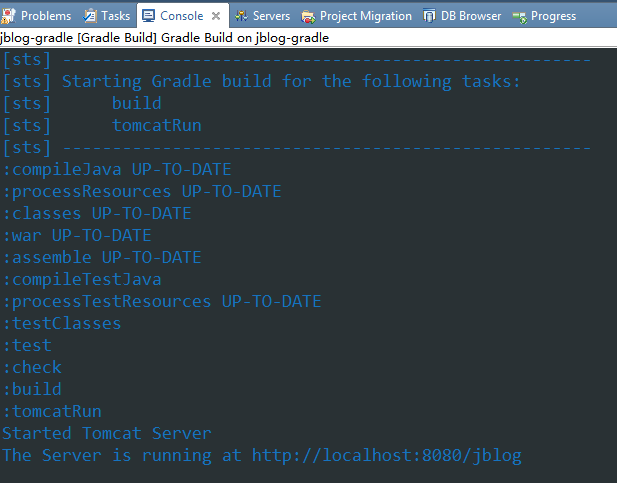

为Gradle添加tomcat插件，调试WEB应用
Gradle提供了不输于maven的依赖管理
提供了强大的test功能，输出优美的测试报告
并且提供war插件，使用内置的jetty调试WEB应用
因为博主偏偏钟情于tomcat，所以希望使用tomcat来调试WEB应用
下面我们来通过些许的代码，将tomcat插件配置到项目中
实现一键调试部署WEB应用
build.gradle文件：

buildscript { repositories { jcenter() } dependencies { classpath "com.bmuschko:gradle-tomcat-plugin:2.2.3" } } apply plugin: "java" apply plugin: "war" apply plugin: "eclipse" apply plugin: "com.bmuschko.tomcat" sourceCompatibility = 1.8 version = "0.0.1-SNAPSHOT" war.baseName = "jblog" project.webAppDirName = "src/main/webapp" //扩展属性放在ext的内部类中 ext{ hibernate_version="4.3.9.Final" spring_version="4.2.3.RELEASE" } configurations { provided } sourceSets { main{ resources.srcDirs = ["src/main/java"] //引入资源文件，打包时才会将配置文件植入war文件 } main.compileClasspath += configurations.provided test.compileClasspath += configurations.provided test.runtimeClasspath += configurations.provided } repositories { mavenLocal() maven {url "http://maven.oschina.net/content/groups/public/"} mavenCentral() jcenter() } dependencies { compile( "org.hibernate:hibernate-core:${hibernate_version}", "org.hibernate:hibernate-ehcache:${hibernate_version}", "org.springframework:spring-core:${spring_version}", "org.springframework:spring-beans:${spring_version}", "org.springframework:spring-context:${spring_version}", "org.springframework:spring-tx:${spring_version}", "org.springframework:spring-web:${spring_version}", "net.sf.ehcache:ehcache:2.9.0", "mysql:mysql-connector-java:5.1.37", "log4j:log4j:1.2.17" ) testCompile "junit:junit:4.7" provided "javax.servlet:javax.servlet-api:4.+" def tomcatVersion = '8.0.27' tomcat "org.apache.tomcat.embed:tomcat-embed-core:${tomcatVersion}", "org.apache.tomcat.embed:tomcat-embed-logging-juli:${tomcatVersion}", "org.apache.tomcat.embed:tomcat-embed-jasper:${tomcatVersion}" } //注意下面这个配置，新版本gradle如果不使用数组添加的话会导致eclipse频繁报错 eclipse.classpath.plusConfigurations += [configurations.provided] tasks.withType(JavaCompile) { options.encoding = "UTF-8" } tomcatRun.contextPath = '/jblog' tomcatRunWar.contextPath = '/jblog'
上面所有蓝色字体就是所有需要配置的代码
默认端口8080，执行tomcatRun命令后会提示：
The Server is running at http://localhost:8080/jblog
这时候访问http://localhost:8080/jblog就可以访问你的应用进行调试了
因为tomcat的gradle插件是超轻量级的，不带有任何附加的功能，所以访问http://localhost:8080是看不到任何tomcat欢迎界面的
这样看来也就是仅仅调试WEB应用了，与使用内置jetty调试貌似也没多大区别，呵呵
相关截图发一下，我很讨厌那种只发文字不发图片的blog，往往搞得人一头雾水，忙中添乱

项目结构

执行gradle命令

输入build tomcatRun命令（注意大小写），点击Run执行

终端输出如上图所示，这时候就可以访问URL测试我们的应用了。
保持着对万物的好奇心。即使是玩游戏，也要停下来想想这是怎么实现的。


· 微软内核团队披露Windows Subsystem for Linux细节
· 首款互联网汽车！荣威RX5正式发布：搭载自主YunOS
· Lumia库存积压 开发者称微软将宣布买一送一计划
· 百度机器人商业首秀 人工智能在肯德基点鸡块薯条
· 谷歌首次设立Google Play奖项，集中展示最佳安卓应用
» 更多新闻...
· 架构漫谈（八）：从架构的角度看如何写好代码
· 架构漫谈（七）：不要空设架构师这个职位，给他实权
· 架构漫谈（六）：软件架构到底是要解决什么问题？
· 架构漫谈（五）：什么是软件